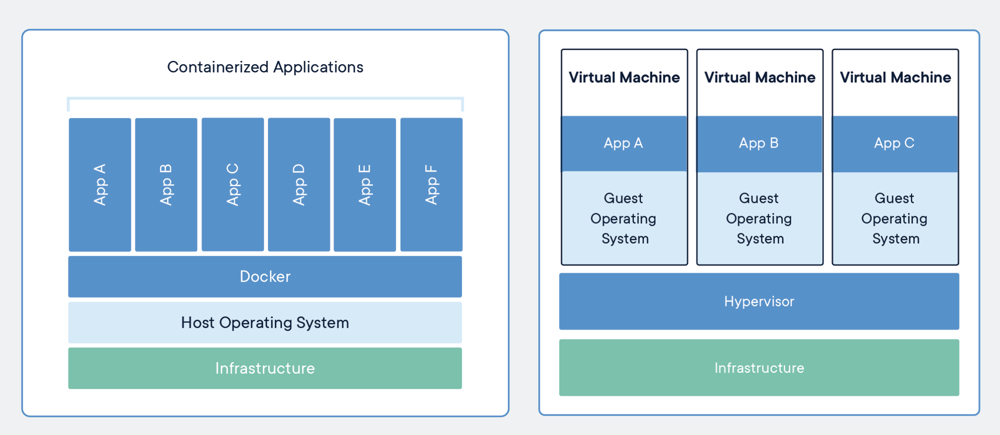

Docker & PHP 101
An intro to Docker technologies using PHP
Mat Gilbert - 2019
https://dirtybirdnj.github.io/docker-php-101

Todays Objective:
Set up a local development environment for PHP
Bare Metal vs Virtualization
Your computer vs a computer in your computer
The cloud is just somebody else's computer
There are important differences between local & production
VM vs Container
In the Beginning
- FTP Edit on Server / Dreamweaver
- VMWare
- VirtualBox
- Vagrant
Docker Alternatives:
- MAMP / XAMPP
- Local by Flywheel (WordPress)
- Homestead (Laravel)
- DBNign
- Postgres.app
Docker is:
Docker Daemon - vehicle for all the containers
Docker CLI - commands to interact with the daemon
Dockerfile
Docker Images
Docker Hub / Registries
Docker CLI frequently used:
docker ps
docker ps -a
docker build .
docker exec -it container /bin/bash
docker-compose build
docker compose up
docker-compose down
Docker Build:
Dockerfile executed
Creates an Images
Collection of apt-get statments
Customizations per project
Order of build steps matters!
Dockerfile example:
FROM php:7.1-apache
COPY ./vendor /work/vendor
COPY ./src /work/src
COPY /docker/vhost.conf /etc/apache2/sites-available/000-default.conf
COPY /docker/initdb.sql /docker-entrypoint-initdb.d/initdb.sql
COPY /docker/php-custom.ini /usr/local/etc/php/conf.d/php-custom.ini
WORKDIR /work
RUN apt-get update && apt-get install -y \
apt-transport-https \
libicu-dev \
libfreetype6-dev \
libjpeg62-turbo-dev \
libpng-dev
RUN docker-php-ext-install mbstring pdo pdo_mysql intl gd
RUN chown -R www-data:www-data /work
RUN a2enmod rewrite
docker-compose
- Why to automate
- Combining services (nginx/apache + mysql)
- Volumes
- Caveates around shared volumes
docker-compose example
version: '3'
services:
db:
image: mysql:5.7
environment:
MYSQL_ROOT_PASSWORD: root
MYSQL_DATABASE: php-minimal
MYSQL_USER: devuser
MYSQL_PASSWORD: devpass
ports:
- "9906:3306"
volumes:
- web-db:/var/lib/mysql
web:
build:
dockerfile: docker/Dockerfile
context: ./
environment:
SHELL: /bin/bash
volumes:
- ./src:/work/src
depends_on:
- db
ports:
- "8100:80"
links:
- db
volumes:
web-db:
Minimal Docker / PHP Starter
How to apply docker
to an existing app?
aka what does "dockerizing" mean?
- Adding docker artifacts
- .env file configuration
- Running build over and over... adding stuff till it works!
- Docker local only is ok!
Bluehouse Group
- PHP / SilverStripe
- Application Development
- Focus on Information Architecture
https://www.bluehousegroup.com
Now Hiring!
Marketing Intern
careers@bluehousegroup.com
Robot Draws You!
- Go to https://techjamvt.com
- Scroll to the bottom, click "Contact Us"
- Tell them you want to see Robot Draws You! at Tech Jam 2019!
mat@robotdrawsyou.com
Thank You
Mat Gilbert
Personal: matgilbert@gmail.com
Github: dirtybirdnj
Bluehouse Group Is Hiring!
careers@bluehousegroup.com
More Info
https://gist.github.com/dirtybirdnj/53de008883b8dc771d9ee6a648e42183